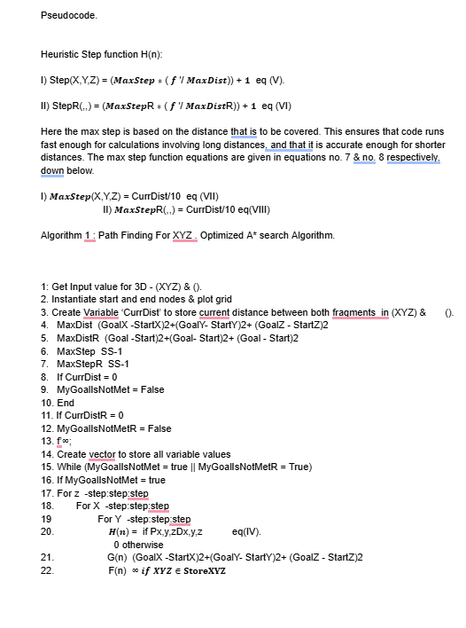
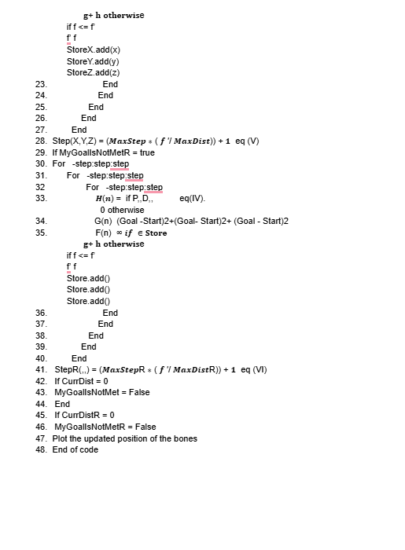
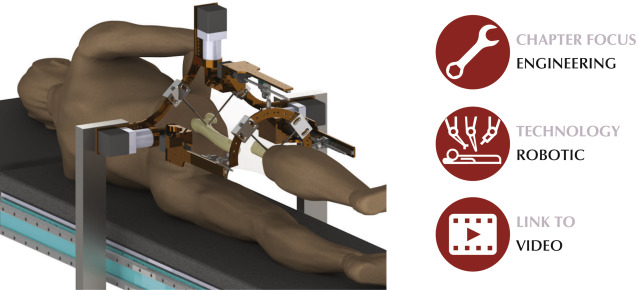

6-DOF Surgical Robot
Research assistant • Sophomore year • Robossis Platform
My first real research experience was assisting a PhD student on the Robossis surgical robot platform. Under their guidance, I focused on configuration space path planning — learning to think in six dimensions, implementing modified A* algorithms, and understanding how robotics systems work in the real world. No background in kinematics, no robotics experience, just determination to understand something I knew nothing about. This project changed my trajectory and led me to CMU. It's the story of learning to contribute to research I didn't invent.
The Problem
Femur fracture surgery is difficult. Surgeons must manually realign broken bone fragments while preserving surrounding soft tissue. Traditional methods rely entirely on the surgeon's experience, leading to variable outcomes — especially in complex cases with multiple fragments or significant soft tissue damage.
The Robossis platform was designed to solve this: a 6-degree-of-freedom (DOF) robotic system that could assist surgeons with precision, stability, and real-time feedback. Three translational axes (X, Y, Z) and three rotational axes (alpha, beta, gamma) allow the robot to adjust to complex fracture geometries with submillimeter accuracy.
But having a robot is only half the problem. The robot needs to plan — it needs to navigate from the current position to the desired final position, avoiding collisions with soft tissue and surgical instruments, while respecting the constraints of six-dimensional configuration space.
Focus Area: Configuration Space Path Planning
The Challenge
Standard A* pathfinding works in 2D or 3D Euclidean space. But a 6-DOF robot lives in a 6-dimensional configuration space. Traditional A* doesn't scale to this complexity — the search space becomes exponentially larger, and heuristics become harder to design. Under my advisor's guidance, I worked on adapting A* to this problem space.
The Approach
Working with the PhD student leading the project, I helped develop a modified A* algorithm that:
- ✓ Treats the 6D configuration space as a graph with discrete waypoints
- ✓ Uses a distance-based heuristic adapted for 6D geometry
- ✓ Incorporates obstacle avoidance for soft tissue and instruments
- ✓ Generates collision-free paths from initial to target configuration
- ✓ Applies Bezier curve smoothing for realistic robot motion
Implementation
I implemented the algorithm in MATLAB, working with the robot's forward kinematics to map configuration space points to Cartesian space. The algorithm iteratively explores the configuration space, prioritizing paths that minimize both distance and collision risk. This was learning-by-doing — translating theory into code with real-time feedback from the PhD student leading the project.


Haptic Feedback
Beyond path planning, I modeled haptic feedback as a spring-mass-damper system. This gives the surgeon real-time tactile signals — alerting them to boundaries and preventing dangerous motions. It's the bridge between robotic precision and human judgment.

Results & Validation
The algorithm was tested on a simulated model of femur fracture realignment. The results were impressive:
- Translational accuracy: ±3.0 mm maximum deviation
- Rotational accuracy: ±1.5 degrees
- Safety: Zero collisions with modeled soft tissue
- Planning time: < 2 seconds for typical surgical cases
.png)
.png)
.png)
Presenting the Work
As part of the project, I helped present the research at a Biomedical Engineering conference at Rowan University. Standing in front of faculty, peers, and industry professionals to explain path planning in configuration space was humbling. The feedback I received was invaluable — it forced me to think critically about the work, understand what was novel versus standard, and learn how to communicate technical concepts clearly.
Poster Presentation
Below is the poster presented at the Rowan BME conference:
If the poster doesn't load, download it here.
What This Taught Me
This was my first research project, and it was transformative. Starting with zero robotics background, I had to teach myself:
- • Robotics fundamentals — forward kinematics, Denavit-Hartenberg parameters, configuration spaces
- • Algorithm design — adapting classical CS algorithms to novel domains
- • System thinking — integrating planning, control, and haptic feedback
- • Scientific communication — writing papers, presenting research, receiving criticism
- • Persistence — dealing with failure and using it as fuel to improve
This steep learning curve — this feeling of being in over my head and learning fast — became my favorite kind of problem. It's why I'm at CMU now, and why I keep choosing research that pushes me beyond what I think I can do.